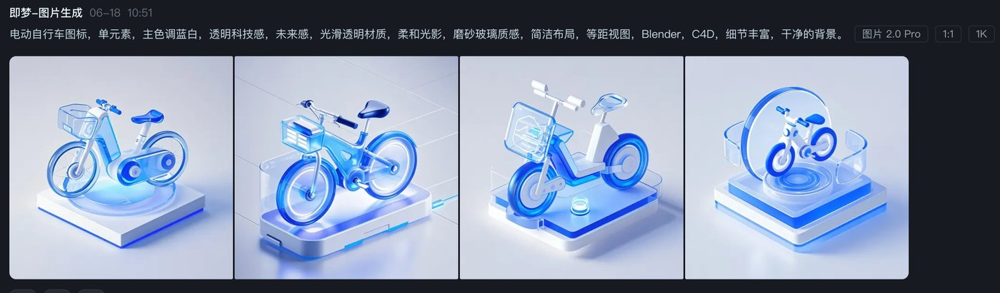
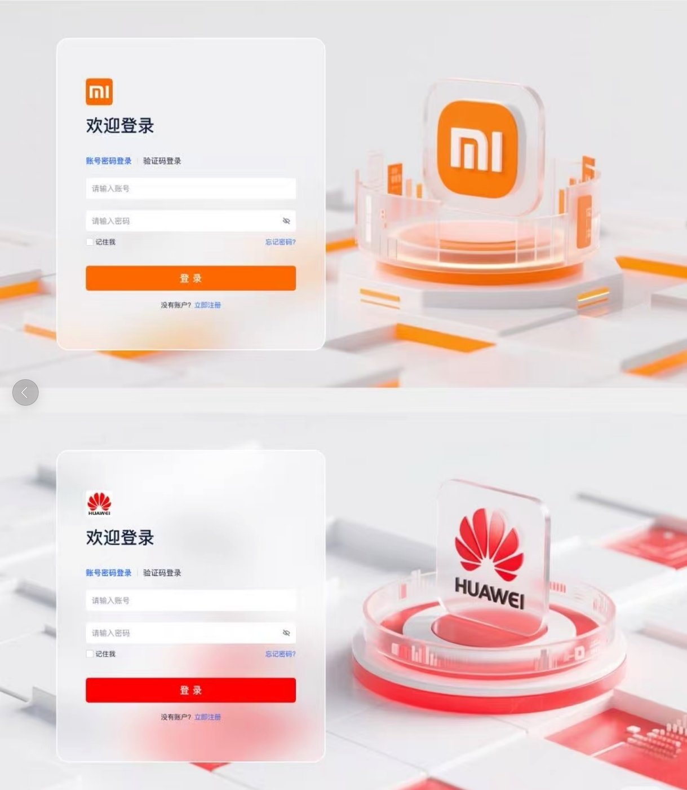
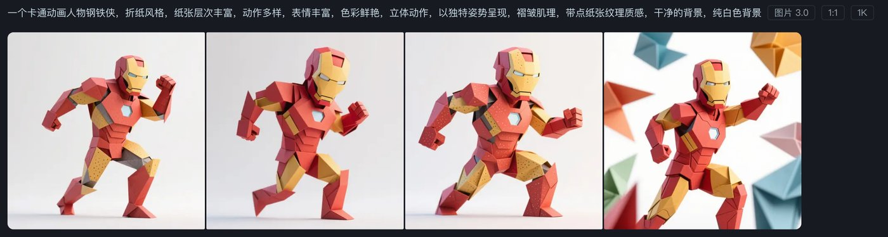

使用即梦 AI 生成图标动图、登录页背景、卡通人物
用即梦 AI 分别生成透明科技感的 DATA 图标及其转动动图、未来科技感的登录页 3D 背景，以及折纸风格的卡通人物形象，记录三个案例的提示词与效果。
01 / DATA 图标 · 透明科技感
主体名称（DATA 图标可替换）、单元素，主色颜色调（蓝白可替换），透明科技感，未来感，光滑透明材质，柔和光影，磨砂玻璃质感，简洁布局，等距视图，Blender，C4D，细节丰富，干净的背景。

02 / 视频生成 · 单车轮子转动
在图片生成的基础上进入视频生成，以生成的图标画面为首帧，输入运动描述，让单车的轮子转动、悬浮的透明材质旋转。
03 / 登录页背景 · 3D 玻璃质感
3D 渲染，未来科技感，通透玻璃质感，（红）白色调，画面右边是一个（华为）的 logo 图标，下方是圆形底座，周围环绕着数据图形，地面由白色几何板块组成，高低不平，色彩鲜艳，白色背景，等距渲染，工作室照明，OC 渲染，C4D，光线追踪。

括号内的品牌、色调均可替换，即可快速生成不同品牌配色的登录页背景。
04 / 卡通人物 · 折纸风格
一个卡通动画人物 XXX（如 DC 蝙蝠侠，此处把 X 换成你想要的形象），折纸风格，纸张层次丰富，动作多样，表情丰富，色彩鲜艳，立体动作，以独特姿势呈现，褶皱肌理，带点纸张纹理质感，干净的背景，纯白色背景。

「 同一套提示词思路，换主体、换品牌、换风格，就能复用到图标动图、登录页背景与卡通人物三类场景。 」
— 原创 AI 工具实践